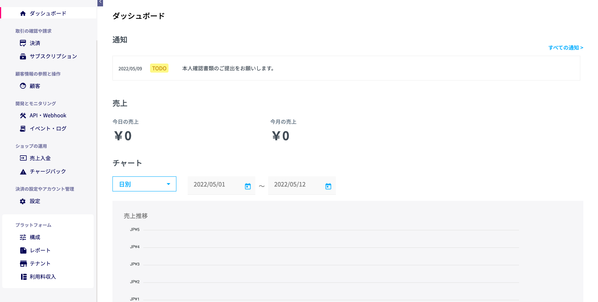
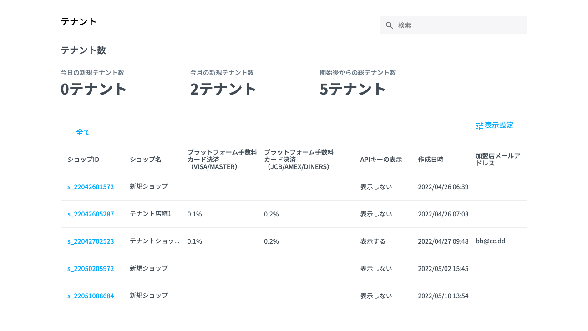
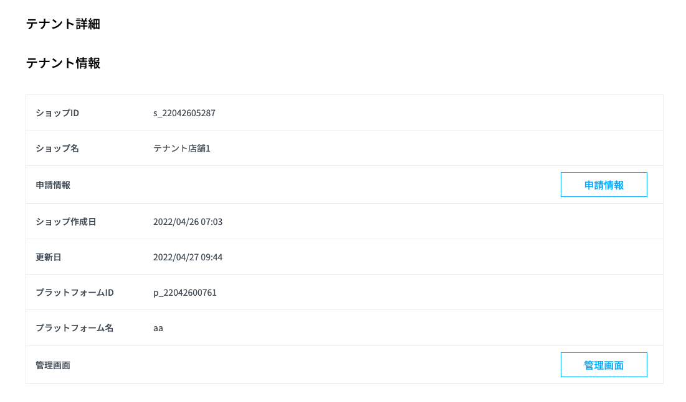

管理租户商户
可在“租户商户”标签页查看归属该平台的租户商户。

选择租户商户的商户 ID，可查看详情并变更设置。

平台使用费
可以更新租户商户的平台使用费率。
设置范围为 3.6%～50%，须按支付方式分别设置。
此处仅更新当前租户商户的费率。平台默认费率请在“构成”标签页的“平台设置”中修改。
以租户商户身份执行 API
平台可以以租户商户身份执行各类 API。
发出 API 请求时，请在请求头中填写执行操作的租户商户的商户 ID。
API 密钥请使用平台密钥。
详情请参阅API 参考文档－请求头。
显示 API 密钥菜单
选择“显示”后，租户商户的开发者可以在 API 页面查看 API 密钥。默认设置为“不显示”。
进入租户商户管理后台
在租户商户信息中选择“管理后台”，即可进入该租户商户的商户管理后台，通常可执行与该租户商户的后台用户相同的操作。
